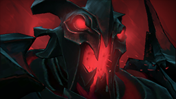
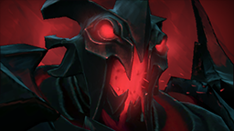

Раз уж я делал лабораторную работу про Dota2, то продолжу свою идею
Итак, что это за игра Dota 2 ?
Dota 2 — компьютерная многопользовательская командная игра в жанре multiplayer online battle arena,
разработанная корпорацией Valve.
Игра является продолжением DotA — пользовательской карты-модификации
для игры Warcraft III: Reign of Chaos и дополнения к ней Warcraft III: The Frozen Throne.
Игра изображает сражение на карте особого вида; в каждом матче участвуют две команды по пять игроков
управляющих «героями» — персонажами с различными
наборами способностей. Для победы в матче команда
должна уничтожить особый объект-«крепость», принадлежащий вражеской стороне, и защитить от уничтожения
собственную «крепость». Dota 2 работает по модели free-to-play с элементами микроплатежей.
Ниже представлены 3 моих любимых героя c гиперссылками:
 
